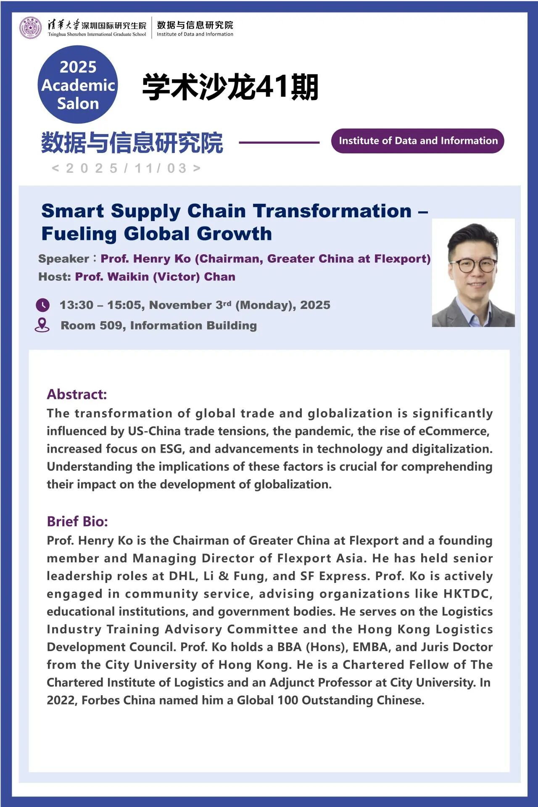

From trade to transformation
Three main themes from the guest lecture.
Fall 2025 · Lecture 07 · Guest lecture
Henry Ko connected the basics of trade, supply chain management and logistics with technology platforms, growth opportunities and the Flexport model.
Explore the summary →13:30–15:05 · Monday, 3 November 2025
Room 509, Information Building · Tsinghua Shenzhen International Graduate School
Institute of Data and Information · Academic Salon 41

This concise summary follows the course organizer’s notes; no presentation slides were supplied. The title, session details and event abstract come from the original poster. Speaker background and the linked company description provide separate context.
The November 2025 poster introduced Ko as Chairman, Greater China at Flexport, a founding member of Flexport Asia and an adjunct professor at City University of Hong Kong.
The original event record and a few links for context.
Academic background and professional experience.
Henry Ko · ReThink HK ↗A conference speaker biography.
Henry Ko · LinkedIn ↗His professional profile.
The session is dated November 2025. External profiles and company pages may reflect later updates. Resource links open in a new tab.